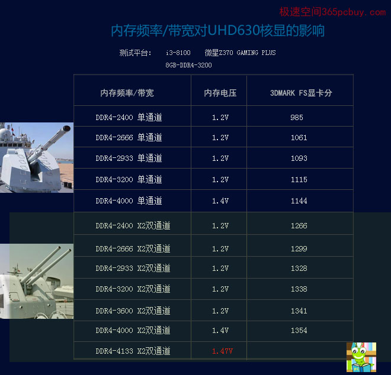
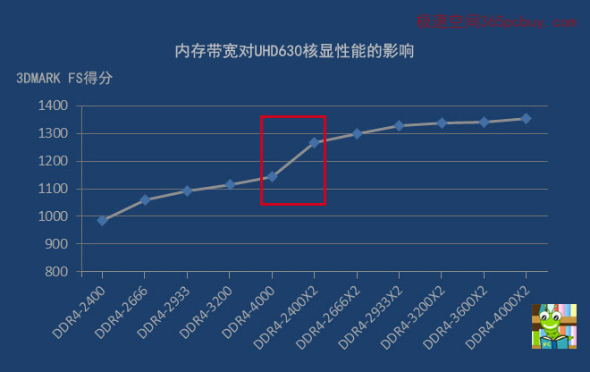
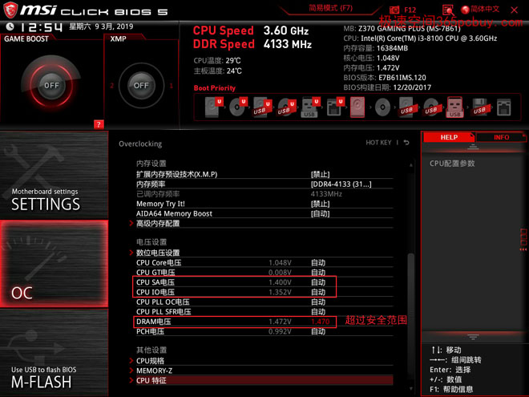

文章标题
发表时间：2019-11-10 文章浏览次数：2165 作者：pc大湿
此文发表于2019年3月20日
此文系【K先生攀岩表演三部曲】的第一部，通过三篇文章，您将彻底弄清楚内存频率、内存单双通道对电脑性能的影响。
序言：
今天，我们请来了一位K先生，他是著名的冒险家。为了充分展示intel UHD630核心显卡的实力，他将表演徒手攀登4133尺高的绝壁，此次表演无任何防护措施，惊险刺激。失手跌落、脚滑摔残、恐高吓傻随时可能发生。请各位速速买票进场，胆小勿入。
为了此次表演，K先生专门去买了两瓶酒壮胆。
“老板，给我来两瓶茅台！“
”客官，涨价了哟......“
"什么，要5000元？买不起，50能买什么？”
“有茅抬酒，度数高，喝半斤就要让人抬着走，因此得名。”看K先生还有点犹豫，老板赶紧说：“现在买还以赠送一大瓶雷碧，很划算哟！”
“茅抬酒就茅抬酒，为了4133尺，今天豁出去了！”
正文：
一般来说，DDR4-3000以上的可称为高频条，去年初还属于都是王谢堂前燕，高贵且稀有。现在型号渐渐多了起来，价格也降了不少，到底高频条的性价比如何呢？这就需要研究它们的性能差异。
由于平台不同，差异也不会一样。
分别有：
1、intel核显平台
2、intel独显平台
3、AMD核显平台
4、AMD独显平台
由于AMD核显平台非常依耐于内存带宽，此前我们已经进行过三超测试，结论是用DDR4-2666X2双通道性价比较高。（查看>>）因此，此次测试只涉及124三个平台，表演将分为三个场地进行，当然，门票也要分开买。我们相信，今天K先生一定会有超越极限的发挥，看完后，您将明白内存带宽对目前电脑性能有多大的影响。
演出开始：
主持人：“各位观众，这是世界著名冒险家K先生，本名DDR4-3200，他具有足够的实力攀登到3200尺高度，但之后每向上一尺，危险就会增加，超过4000尺后，危险更是以指数的平方数量级递增，他最高能攀登到多高呢？会不会掉下来摔死呢？”
K先生身穿一领乌黑战袍，腰挎一个银色小包，内装岩石锥、铁锁、下降器等一应俱全，当然，还有一瓶茅抬酒。
现场镁光灯一阵狂闪，口哨声、呼喊声、掌声响成一片。这等场面对K先生来说早已司空见惯，不紧不慢地带上了头盔，在手上涂了些镁粉， 出发！
平台：
i3-8100、微星Z370 GAMING PLUS、DDR4-3200
为了让大家看的更过瘾，表演分为单双通两轮。

图二
演出解读：
1、K先生从2400尺的高度开始攀登。由图二看出，单通道DDR4-4000不如双通道DDR4-2400，双通2400的理论带宽就比单通4000更大。
2、核显需划分内存作为显存，内存频率即为显存频率。因此，内存频率对核显平台的影响比独显平台更大。
回顾：在HD530核显平台（第六代酷睿），DDR4-2133双通道比单通道的性能大约提升12%。
然而，时过境迁，intel核显已经是升级到UHD630，而且测试软件也早已升级，从此次表演看，DDR4-2400双通比单通的性能高28.5%。
3、冲击4000尺高度时，冒着生命危险，将标准电压提升到了1.4V。
在单通表演中，从2400到4000尺，幅度提升67%，3DMARK FS分数提升了16%。
在双通表演中，从2400到4000尺，幅度提升67%，但3DMARK FS分数只提升了7%。
可见，内存的理论带宽起点越高，实际性能提升幅度越小。在现实生活中也有很多类似情况，一个差生要从40分提升60分容易，但优生要从80分提升到95分就比较难。
达到4000尺的时候，K先生听见观众席上只响起了一些零星掌声，内心失落。难道是还不够精彩？那就冲击主板允许的最高极限吧。怕死？饮酒壮胆！
只见他单手抠住岩壁，另一只手从腰包中摸出茅抬酒，脖子一仰，半瓶下肚。
果然好酒！
一团烈火在胸口燃烧，勇从胆边生，人在水上飘。
直接加到1.45V，还是无法启动，再加0.1V，不行再来0.1V，达到1.47V总算勉强进了系统，在高压状态，芯片随时可能击穿报废。此时，他的手早已僵硬无力，双脚不住地颤抖，用尽浑身最后一丝力气爬上了一个平台上，这时已经到了4133尺的高度。在微醺之中，K先生开始感到头重脚轻起来，他知道，性命此时已是岌岌可危，只好慌慌张张地向观众挥了挥手，匆匆下来了。
4、图二转换成折线图就能看得更清楚。

图三
从图三看出，从DDR4-4000单通道到DDR4-2400X2双通道（红框），有一个较大的提升，但一旦步入双通道后，随着频率的增加，性能的提升越来越微弱，反应在折线图中，上升的角度非常小。

警告：超过1.4V后，电压值会变成红色，内存损坏的风险大大增加。
总结：
1、在使用UHD630核显情况下，搭配双通道DDR4-2400/2666 性价比最佳，比单通道提升幅度达到22%-28%。（可以粗略认为，intel核显平台的单双通道差距为：25%）
2、在使用UHD630核显情况下，不宜搭配双通道高频内存（3000MHZ以上）。即使其价格下降到和DDR4-2666相近也没有多大意义，原因是intel核显平台标配多为H310/B360主板，高频内存将会降频使用。不可为了使用高频内存而把H310/B360升级到Z370，这样是性价比极低的做法。
结束语：
第一场表演结束了， 下一场表演将在inte独显平台进行。K先生为粉丝们签名合影后，转到后台和经纪人窃窃私语，想知道他们在说什么吗？